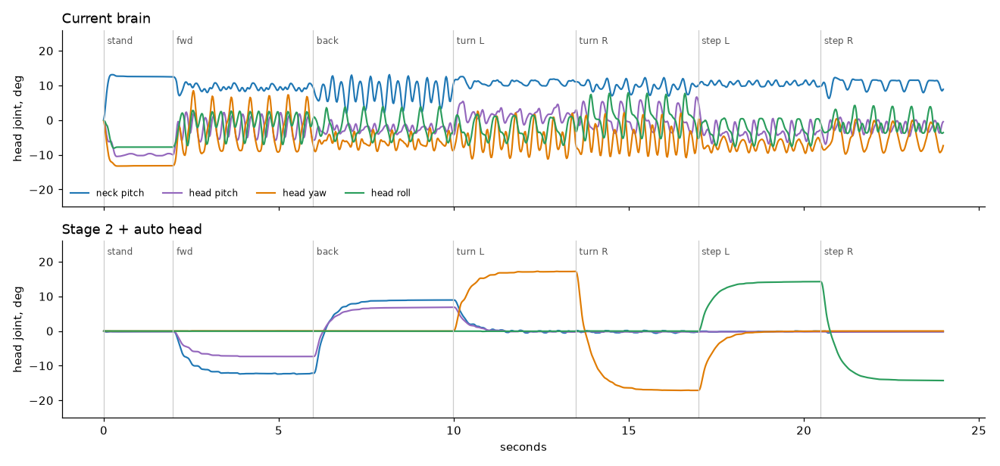
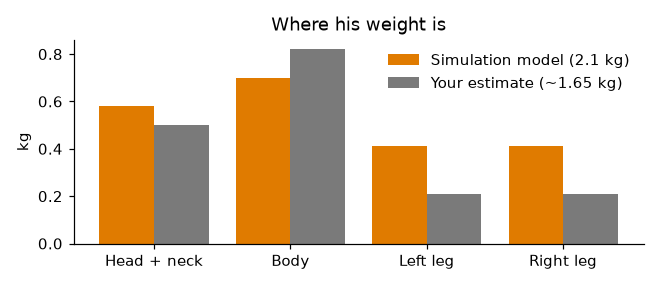
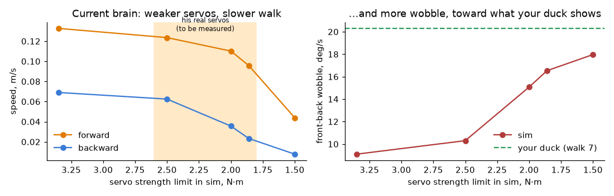
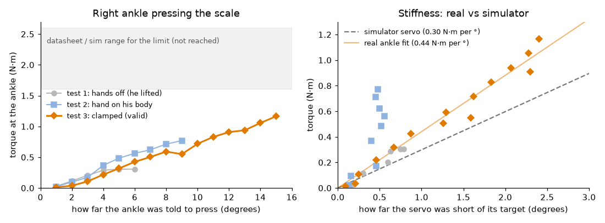
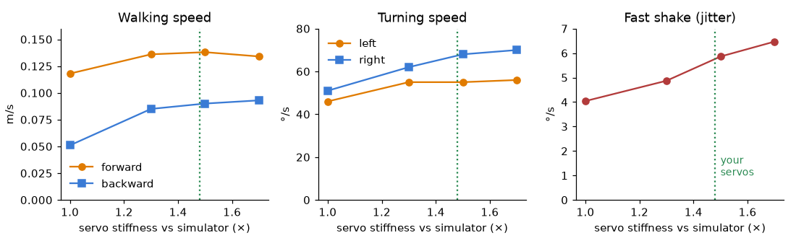
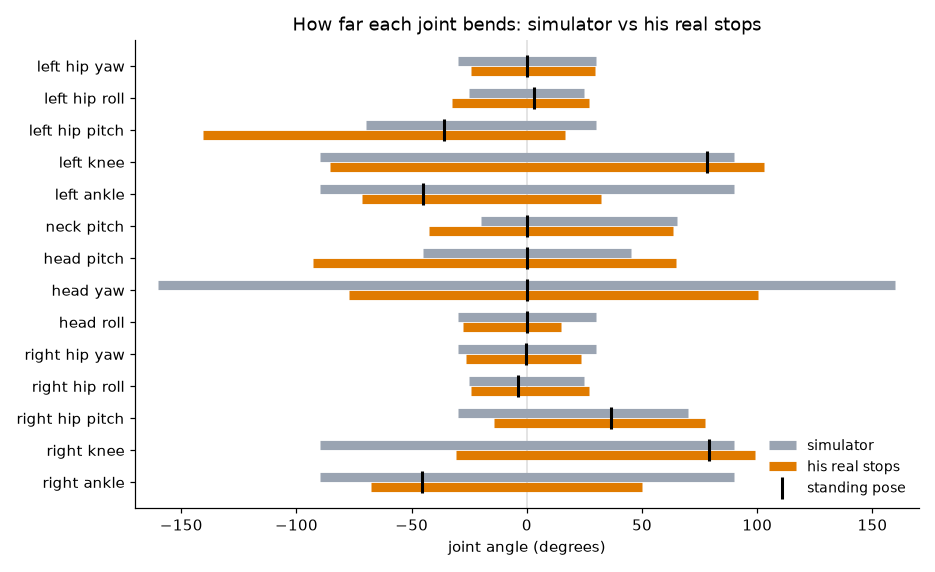
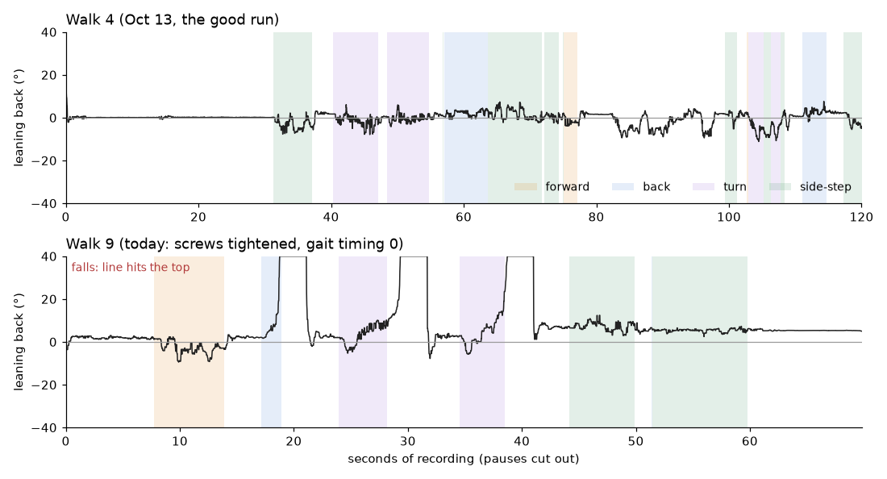
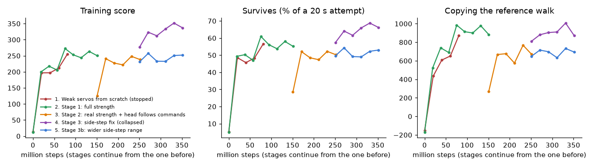
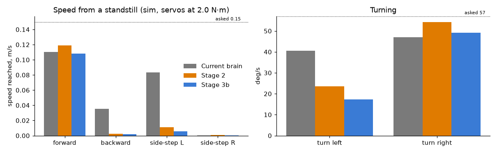
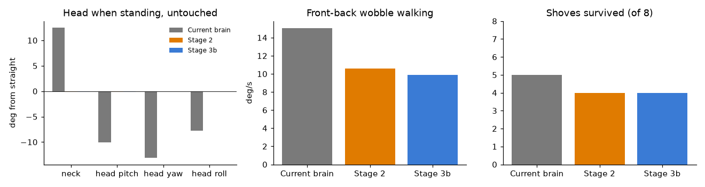

Everything from the first day of training a new walking brain on the home PC (RTX 4060): what we tried, what the simulated duck does, and the plan from here.
13 Oct 2026 · 5 training runs · about 600 million simulated stepsBEST_WALK_ONNX_2). Right: the new stage 2 brain with the automatic head pose. Both run the same routine with servos limited to 2.0 N·m: stand, forward, backward, turn left and right, side-step left and right, then head moves while standing. The camera follows each duck but doesn't turn with it.The current brain uses the head as a counterweight. Even standing still it holds the head turned 13° right and tilted, and while walking it swings the head about ±10° every step. In the new brains the head does only what it's told. The automatic pose you asked for (pitch with forward and back, yaw into turns, roll toward side-steps) shows as the smooth steps in the lower trace.

The head and neck are about a quarter of him, so where the head goes matters a lot for balance. The simulation model is close to your estimate for the head, gives the legs more weight (five servos each, about 275 g), and is heavier overall (2.1 kg against 1.5–1.8 kg). Training randomizes his weight down to 72% of the model to cover that.

The training model lets each servo push up to 3.3 N·m. A real STS3215 at his voltage stalls at roughly 1.9 N·m. When the simulator's servos are limited to real strength, the current brain slows down and wobbles more, heading toward what your duck actually shows. That is why the next step is measuring his servos instead of guessing.

Three tries. Test 1 (hands off): he lifted off the stand at 600 g. Test 2 (hand on his body): the scale also counted your hand pushing down through his stiff leg; the servo's numbers stayed flat while the scale climbed. Test 3 (clamped) worked: as the force rose to 2.3 kg at the toe (1.16 N·m), the servo fell steadily further behind its target and its load climbed with it, as a real measurement should.

I re-ran the current brain in the simulator with every servo made stiffer, from the model's value up to 1.7×.

For training: the new brains will practise with servo stiffness spread from 1.1× to 1.8× the model (it was 0.9–1.1×), and with the maximum push spread across the datasheet range, so they're built for servos like his.
The failsafe warns below 7.0 V, and below 6.8 V it crouches him, turns the motors off and shuts the Pi down. Whatever we do, he ends up on the floor once the motors go limp, so I tested four ways of going down in the simulator, with servos as stiff as his.
| Sequence | Head hits the floor at |
|---|---|
| Motors off while standing | 1.33 m/s |
| Plain crouch, then off | 1.09 m/s |
| Lean-back crouch, then off (chosen) | 0.25 m/s |
| Lean-back crouch, fading the motors out | 0.30 m/s |
0.25 m/s is like dropping his head from about 3 mm; 1.33 m/s is like dropping it from 9 cm. The lean-back crouch stayed gentle (0.15–0.5 m/s) across every servo stiffness and strength I tried. Fading the motors out slowly didn't help: once they're weak enough to give, he goes down the same way.
Update: these numbers used the simulator's joint ranges. With his real joint stops (next section) the lean-back crouch lands at 0.47 m/s, and the tuck replaces it.
You moved each limp joint to its stop by hand (joint_limits_probe.py). Three things stand out. His knees only fold about 20° past standing; the simulator let them fold 90°. His ankles bend much less than the model. And his head turns 77° left and 100° right before the cable pulls, so the ±20° head-turn limit was far too tight.

Changed on the duck: the head-turn limit is now ±70° (from ±20°), short of where the cable pulls and past anything the brain or the web slider asks for. The new training will use these stops.
You asked for: head forward, sit back on his legs, face forward, tucked into a ball. I searched about 1,500 poses in the simulator with his real stops. Once the motors are off, no pose stays sitting. His knees can't fold far enough to sit on, so a limp duck always ends up on his chest or on his back. A couple of poses balanced for a moment, but a few degrees of error tipped them over hard, sometimes backward. So the goal became: go down forward, every time, from as low as possible.
| Way down | Head lands at | Like dropping his head from | Ends |
|---|---|---|---|
| Motors off while standing | 1.36 m/s | 9 cm | on his face |
| Old lean-back crouch | 0.47 m/s | 1 cm | on his face |
| Option 2: tuck, chin up (default) | 0.62 m/s | 2 cm | on his chest, face down-forward |
| Option 1: tuck, head down | 0.38 m/s | 7 mm | on his chest, head tucked under |
Both tucks went down forward in every one of 70–105 simulated variations: stops a few degrees off, weaker or stronger servos, pose errors. Worst cases were 0.74 m/s (chin up) and 0.47 m/s (head down). Both ran on the real duck from pause: knees reached 96°; his soft head servos sag about 9° under gravity. To switch, set "shutdown_pose": "head_down" in the battery_guard part of duck_config.json.
Same brain and the same commands as walk 4, but three backward falls in 89 seconds. Even standing still he leaned back 2.5–4°, where walk 4 stood at 0°, with his joints at the same angles to within half a degree. So his body now sits further back for the same joint angles: something changed mechanically when the screws were tightened, most likely the ankle horns settling a few degrees off.

Fix to try in walk 10: both ankle offsets shifted 3° forward (left 4.5°→7.5°, right 0°→3°), which should put him back where walk 4 stood. The right side-step still didn't start stepping; that one is the brain.

| Run | What changed | Steps | Result |
|---|---|---|---|
| 1. Weak servos from scratch | Real servo strength (1.4–1.95 N·m) from the start | 80 M | Learned to stand still; stopped |
| 2. Stage 1 | Full strength, his weight range, head reward on | 150 M | Walks forward 0.12–0.15 m/s, turns |
| 3. Stage 2 | Real strength 1.6–2.1, head follows commands, more single-direction practice | +100 M | Head fixed, steadier, walks forward. No back or side |
| 4. Stage 3 | Tightened the sideways speed tolerance | +100 M | Collapsed to standing still (my mistake) |
| 5. Stage 3b | Wider side-step range (±0.2), strength 1.8–2.6 | +100 M | Same as stage 2 |


Later, for smoothness: regenerate the reference walk with less side-to-side sway, and use keyframes you puppet for expressive moves such as a bow or a nod.